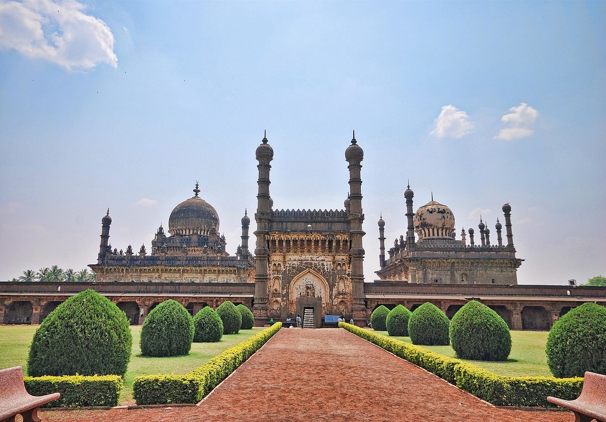
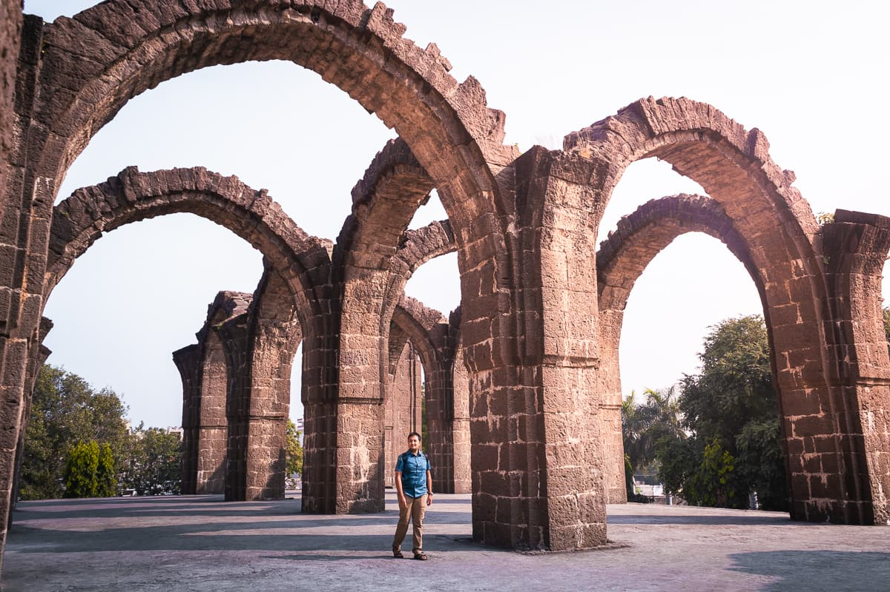
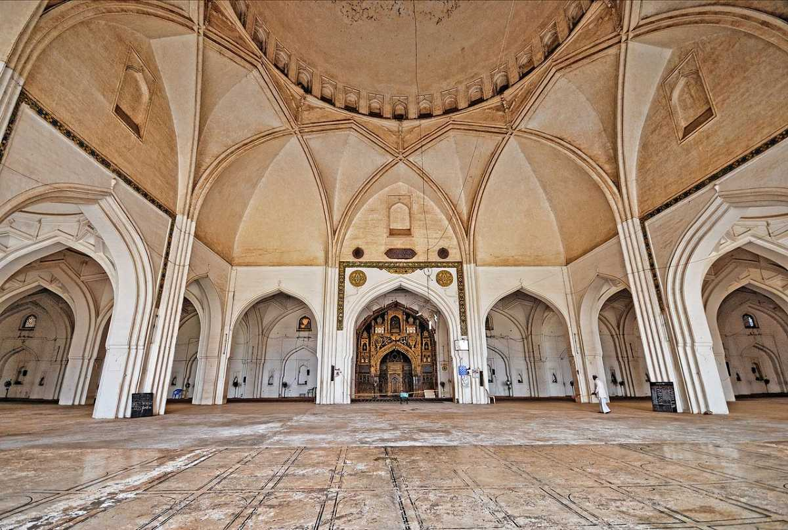

Bijapur, officially known as Vijayapura is the district headquarters of Bijapur district of the Karnataka state of India. It is also the headquarters for Bijapur Taluk. Bijapur city is well known for its historical monuments of architectural importance built during the rule of the Adil Shahi dynasty. It is also well known for the popular Karnataka premier league team, the Bijapur Bulls. Bijapur is located 519 km (322 mi) northwest of the state capital Bangalore and about 550 km (340 mi) from Mumbai and 210 km (130 mi) north east of the city of Belgaum.
The construction of the Gol Gumbaz began in the mid-17th century, during the close of Mohammed Adil Shah's reign, which was from 1627 to 1656.It is located directly behind the dargah of Hashim Pir, a Sufi saint; Richard Eaton views this as suggestive of the close relationship between the ruler and the saint.The mausoleum was never completed; construction may have halted in 1656 due to Mohammed Adil Shah's death that year. More
The tomb was commissioned by Ibrahim Adil Shah II, and completed in 1626. It was intended for Taj Sultana, the queen of Ibrahim Adil, but as he died before her, he was interred within the tomb. An inscription credits Malik Sandal as the architect of the complex, and states that 150,000 huns were expended in its construction. More
The construction of the Jama Masjid was begun by Ali Adil Shah I in the year 1576. The project was financed with money looted from the Battle of Talikota, in which an alliance of Deccan Sultanates had emerged victorious against the Vijayanagara Empire. Though the majority of the mosque was constructed by 1686, the structure never reached completion. It nonetheless came to serve as the principal mosque of Bijapur, replacing an older, smaller congregational mosque built by Ibrahim Adil Shah I. More